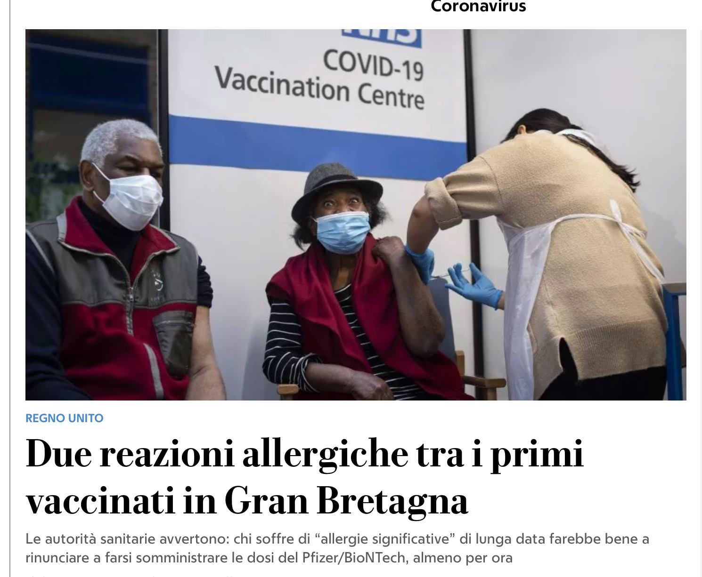

You may have heard the we live in a post-truth era, that we are facing an infodemic or, even, a syndemic, the combination of two epidemics, meaning that covid “emerged in an information ecosystem that helps misinformation and lies spread faster than scientific evidence, weakening our ability to respond to new threats”. Not only this is not true but, I believe, is also a dangerous narrative that makes us focus on the wrong problems instead of the real ones. Anyway, this is not a topic I can elaborate on here (hey, I wrote a book - partly - about that!).
But, of course, some misinformation does spread. Another aspect of these stale criticism is that, naturally, the culprit is social media. Luckily, many real experts of media have long recognised the contribution, or in fact the prominent role, that mainstream, traditional, media have in the current spread of misinformation. Rasmus Kleis Nielsen, director of Reuters Institute at Oxford University, reports on Twitter several examples of mainstream media, or prominent political figures, spreading or originating false or misleading information: Misinformation often comes from the top.
As an Italian living in UK, with part of my family living in Italy, I have been irritated by how the major Italian newspaper (for number of readers), La Repubblica, covered the last days of news from UK. But I noticed the disservice before, so hang with me.
The 15th of November, La Repubblica - I repeat, the major Italian newspaper - covered the declarations of don Livio Fanzaga, the director of Radio Maria, a large Catholic radio, which, among others, claimed that “Coronavirus is a conspiracy under the impulse of Satan”, with the goal of “building a new world without God”. Now, why a major newspaper should report the delusional beliefs of a not very important figure? In addition, in the whole article there is not a single comment on the declarations from the journalist. If I remember correctly, but I can not check now, the article was linked from the first page of the online version (why??) and the declarations were reported as “controversial”, which is, clearly, not the right word.

The 9th of December, in the first days of the successful roll-out of the UK vaccine (our local medical practice texted us yesterday than the first 1,000 people have been vaccinated in our Bristol neighbourhood), La Repubblica reported, as full-page headline of the online version, the news about the two allergic reactions among the early people vaccinated. Now, this is technically not false, but it is an expected consequence of all vaccines. It was quickly reported in other international newspapers (as it should be) and quickly (as it should be) forgotten. Putting this news as full-page headline, when we should all strive to understand how to convince “hesitants” and reassure everybody about the vaccine, is not only bad journalism, but it could have dangerous consequences.
We arrive to Sunday, after the declaration of the stricter Christmas lockdown for some areas in UK, the new strain, and the stop of flights from UK to Italy. It is a worrying situation, so what does the major Italian newspaper do? Again, full-page headline. The summary contains an anonymous quote: “We run way. The situation in London is out of control”. While health secretary Matt Hancock did say that the new variant (not “the situation in London”) was out of control, he certainly did not say anything about running away from London, so it is not clear what the quote refers to. But, beside the details, it is clearly made up, explicitly or not, to scare readers (a strategy often used in misinformation).
We arrived to the title that today made me writing this post instead of doing something more festive: “Chaos in UK, you even have to do the tests by yourself!". Summary: “It is a jungle there, that’s why there has been an out-of-control diffusion”. The major italian newspaper. A (supposedly) serious, left-leaning, large circulation newspaper.
I am not a supporter of the current UK government, and not a supporter of their Covid management, but: you can choose whether to do the swab yourself or with an assistant (the parents do it for children) and this is because people prefer to do it themselves instead that having someone else doing it. UK tested, from the beginning of October, between 300,000 and 400,000 people every day, which is double of triple of what Italy did. We had a test for our daughter (she had a fever for few days): we booked it online in the evening on the nhs website, we got a spot for the next morning, we did it in 10 minutes and we had the result (negative!) the day after. Hardly chaos.
It is difficult to comment on the rest: implying that the “out-of-control diffusion”, which I guess refers to the new strain, is due to the fact that here is a “jungle”. Not much to say, if not that one of the reasons why the new mutation has been first found in UK is that UK does 56 genomic sequences for every 1,000 covid cases, against, for example, the 0.42 of Italy (data from here: in other words, if the new strain would have been equally present in Italy and UK, everything else being equal, UK would have around 130 times more probability to detect it).
–
To conclude this rant-ish and quickly written post. It is disheartening how this journalism seems to be acceptable. Beside the academic thoughts, it can have important (see the vaccine example above) and real (Hi mum, I am good!) consequences. The fact that it goes together with the “social media are the culprit” slogan just makes it more unnerving. Anyway: check your news sources, stay safe wherever you are, and enjoy the holidays if you can!